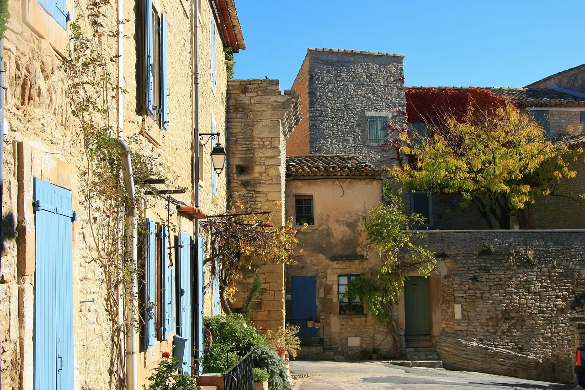

{kind=link}

Abbaye de Sénanque
1148년 깊은 협곡 속에 세워진 12세기 시토회(Cistercian) 로마네스크 수도원. 일체의 장식을 배제한 절대적 청빈의 중세 석조 건축과 현재도 이어지는 수도사들의 침묵 기도.

고르드나 루시용 같은 유명 관광 마을의 번잡함에서 벗어나 진짜 프로방스 시골 마을의 고요함과 진솔한 생활감을 만날 수 있는 뤼베롱의 '숨겨진 보석(Le Village Secret)'이다.
칼라봉 계곡이 내려다보이는 아담한 언덕 위에 자리 잡고 있으며, 좁은 골목길마다 잘 가꿔진 화분과 덩굴 식물, 정갈한 건식 석조 주택들이 조화를 이루고 있다.
마을 정상에는 17세기 복원된 석조 풍차인 '예루살렘 풍차(Moulin de Jérusalem)'와 테라스 정원이 있어, 뤼베롱 북부 평야와 올리브 숲을 한적하게 조망하기에 최적의 쉼터다.
"화려한 볼거리보다 '아무것도 하지 않고 조용히 걷는 평화'를 원하는 여행자에게 뤼베롱에서 가장 사랑받는 마을이다." 마을 중심 카페 드 라 포스트(Café de la Poste) 테라스에서 커피나 시원한 로제 와인을 한 잔 마신 뒤, 돌담길을 따라 정상 풍차까지 걸어 올라가 뤼베롱의 평원을 바라보는 45~60분의 산책 코스를 추천한다.
| 운영시간 | 공식 페이지에 마을·시장 구체 시각 미표기(목요일 '오전'까지만 명시) 재확인 |
|---|---|
| 휴무 | 마을 상시 개방·휴무 없음. 장날은 목요일 오전(Rue de la République, 상인회 주최) — 그 외 요일 시장 없음 |
| 예약 | 예약 불필요 |
| 소요시간 | 105분 재확인 |
기념품점 일색인 다른 마을들과 달리 작은 식료품점(Épicerie), 정육점, 베이커리, 도자기 공방이 마을 사람들의 삶과 자연스럽게 어우러져 있다.
| 항목 | 상세 정보 |
|---|---|
| 위치 | 84220 Goult, Vaucluse |
| 마을 입장/요금 | 연중 상시 개방 / 무료 |
| 추천 주차장 | Parking de la Libération (마을 입구 광장, 무료) 또는 Parking du Moulin (풍차 인근 무료 주차장) |
| 마을 시장 | 매주 목요일 오후 (15:00–19:00): 소박한 로컬 먹거리 장터 |
| 연계 동선 | Roussillon에서 차로 10분, Gordes에서 차로 12분 거리로 두 핵심 마을 사이의 완충 휴식 거점으로 최적 |
1148년 깊은 협곡 속에 세워진 12세기 시토회(Cistercian) 로마네스크 수도원. 일체의 장식을 배제한 절대적 청빈의 중세 석조 건축과 현재도 이어지는 수도사들의 침묵 기도.

뤼베롱 산맥 북사면에 층층이 솟아오른 가장 낙차가 큰 계단식 언덕 마을. 해발 425m 옛 성당(Vieille Église) 정상 테라스에서 맞은편 라코스트(Lacoste) 성채와 계곡 전체를 굽어보는 압도적 파노라마.

뤼베롱 현지 농부들이 직접 재배하고 만든 신선 농산물과 특산품만 판매하는 프랑스 공인 정통 생산자 직거래 일요 시장(Marché Paysan). 뤼베롱 농가 체류의 최고의 식재료 보급 거점.

보클뤼즈 고원 가장자리 백색 석회암 절벽 위에 층층이 솟아오른 뤼베롱 최고의 요새 마을. 마을 진입로에서 마주하는 압도적인 파노라마 전경과 11세기 중세 르네상스 성채.

알베르 카뮈가 영면한 뤼베롱 남부의 평탄하고 세련된 예술 마을. 프로방스 최초의 르네상스 성(Château de Lourmarin), 플라타너스 그늘 아래 카페 테라스, 로즈마리에 덮인 소박한 카뮈의 묘소.

에메랄드빛 소르그(Sorgue) 강이 섬처럼 감싸 흐르는 '프로방스의 베네치아'. 이끼 낀 거대한 목조 물레바퀴(Roues à aubes), 300여 개 앤틱 상점이 밀집한 유럽 3대 골동품 도시이자 시인 르네 샤르의 고향.